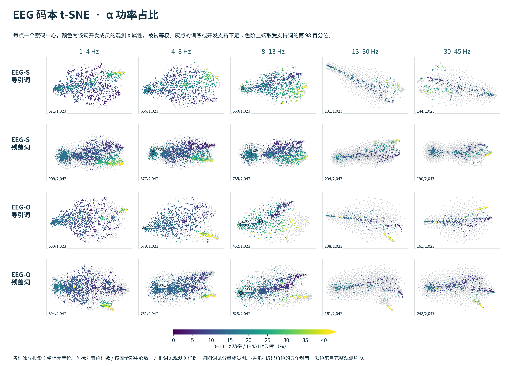
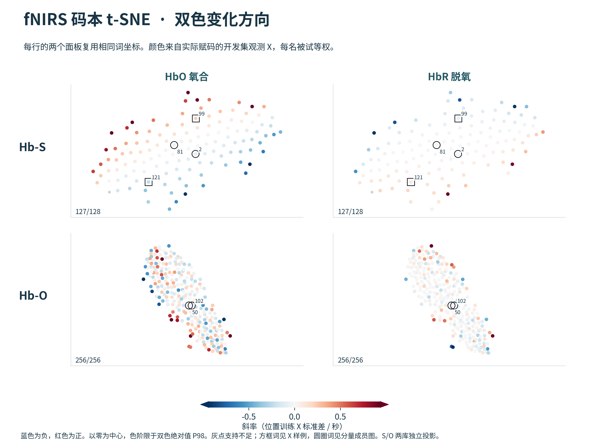
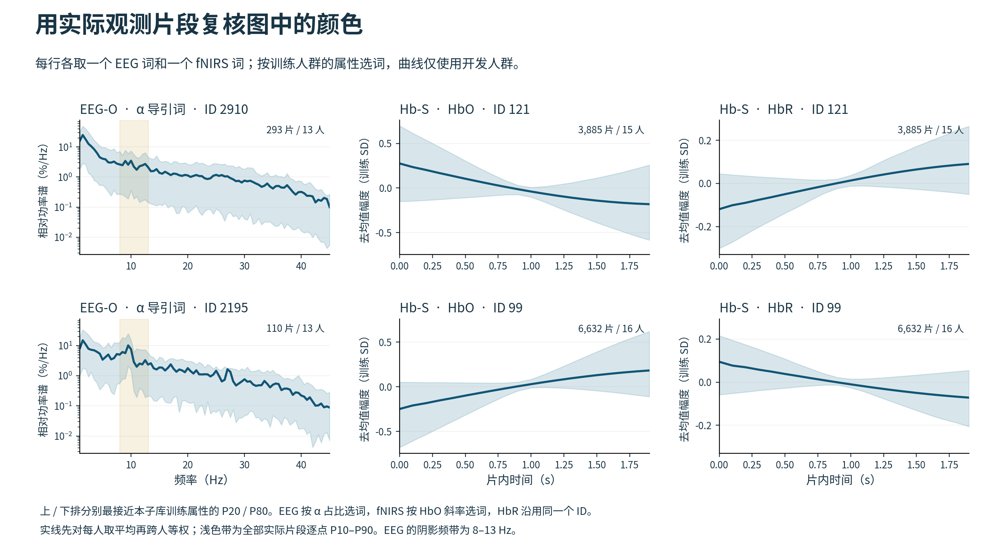
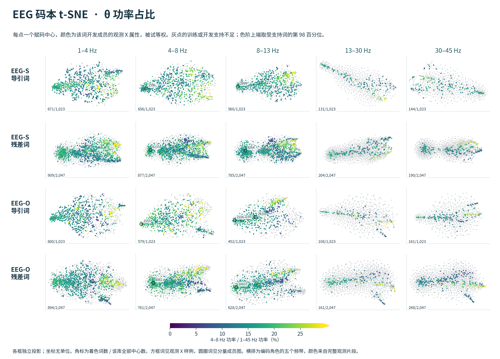
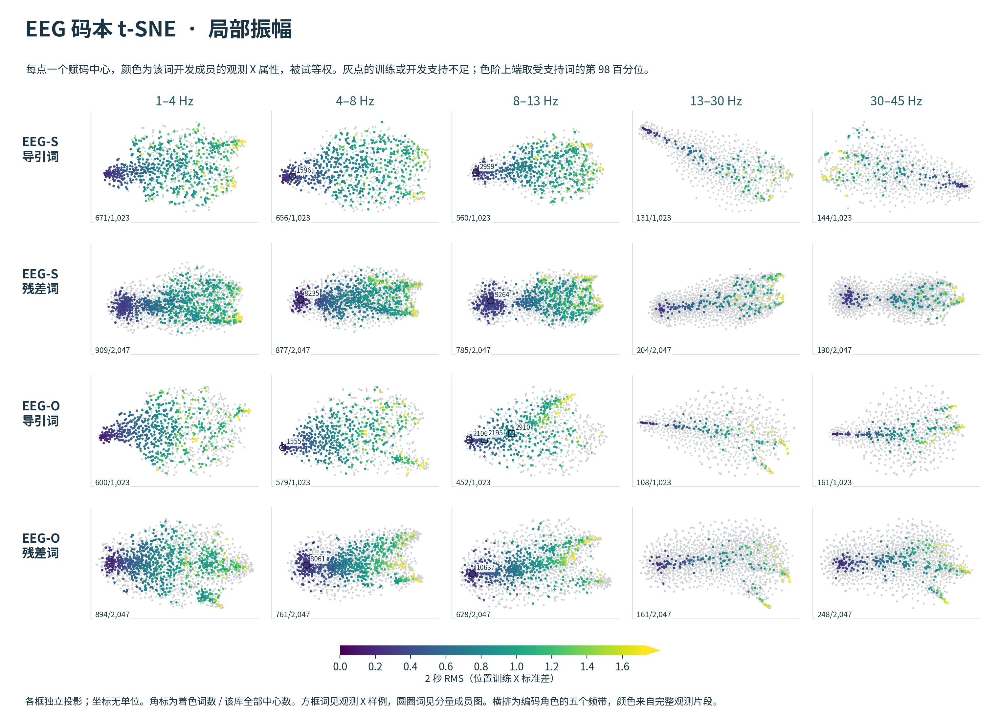
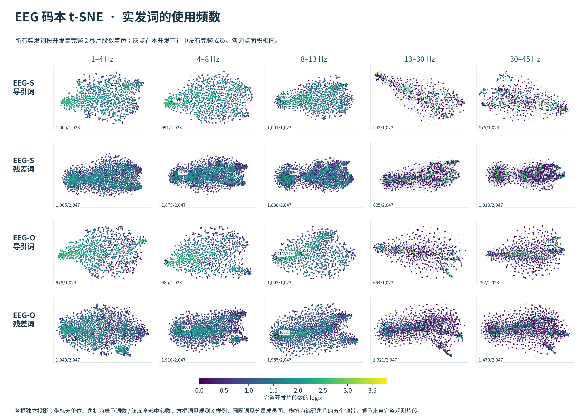
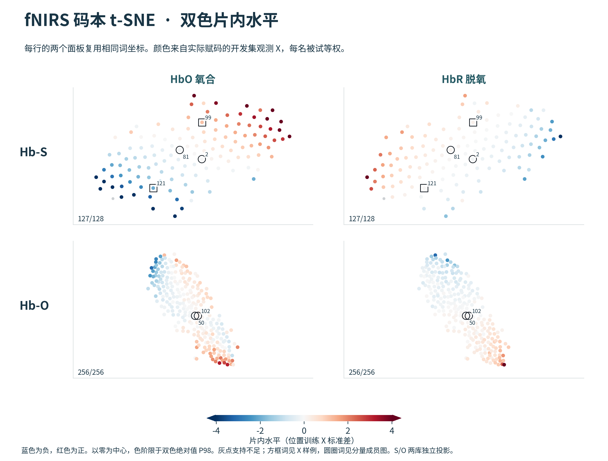

PDF 图册 · 逐词坐标与属性 · 二维近邻检查 · 训练–开发与原空间比较 · 特殊 ID 用量 · EEG-S 分量成员 · EEG-O 分量成员 · Hb 分量成员
在 30,700 个 EEG 中心和 384 个 fNIRS 普通词上，分别拟合 22 张 t-SNE。EEG 的分支、编码阶段及频带拥有各自拟合的投影基和特征尺度；fNIRS 两支也独立学习 64 维向量。每框仅比较一个子码本内部的几何关系。
EEG 有 9,719 / 30,700 个中心达到 α 占比着色门槛，占普通码全部完整开发赋码的 92.4%。fNIRS 有 383 / 384 个中心可按 HbO 斜率着色。模型有向量但支持不足的词仍以灰点显示。
| 研究 | 论文中实际分析的对象 | 本图采用的做法 |
|---|---|---|
| Ogg 等 · 图 1 | 将未用于预训练的 EEG 试次送入模型，对时间上各 Transformer 表示取均值，再用 t-SNE 按被试或任务着色。 | 明确每点单位。本图每点是一个词；同一词在多个人和位置的观测用于估计颜色。 |
| CodeBrain · §3.5 图 4 | 在睡眠数据上把时间词和频率词映回实际 EEG 片段，比较慢波、频谱及两类码的不同组合。 | 让图上选定的词能追溯至实际开发成员，以谱或双色去均值波形检验颜色差异。 |
| BioCodec · §4.3、图 2–3 | 分残差量化层显示词频与利用率，并比较 EEG 通道相关矩阵和量化表示的相关矩阵。 | 分开编码阶段，另画实际词频；在原始向量空间计算近邻属性差。 |
| LaBraM · §2.2、图 2 | 用离散神经词重建 EEG 片段的傅里叶幅度与相位。 | 优先检查实际成员的频谱属性，并同时记录 RMS 以区别频谱构成与振幅。 |
| GeoNIRS · 方法与消融 | 预训练联合建模源探位置，并在 HbO、HbR 间双向重建。 | 固定同一套词坐标，分别看双色方向及水平；解剖位置的解释需回到源探对应关系。 |
Ogg 等的图回答试次表示如何组织；CodeBrain 的方法更适合查验某个词对应哪些实际波形。这里将“词的几何位置、发生频数、观测属性和组内离散程度”分别展示。t-SNE 的簇间空白、边缘、面积和跨框方向不提供生理距离刻度。Wattenberg 等的 t-SNE 读图实验







EEG 使用实际赋码的 balanced 导引中心、innovation 残差中心；Hb 使用 EMA 码本。直接采用模型使用的欧氏坐标，不再按维重标度。每词一票，不按出现频数重复投影。EEG 缺测 ID 0 和 Hb 两个静默 ID（S 128、O 256）按特殊接口单列；两支静默码对应同一批完整开发片段，各有 1,782 次使用。
使用冻结 QC 面板的 60 名训练被试及 16 名普通开发被试。只计 2 秒内完整的评分位置。每词先在同一被试内对片段属性取均值，再在有成员的被试间等权。训练与开发两边均至少 8 个可计算片段、至少 2 人贡献才着色。这是显示门槛。不同词的被试、数据集和位置组成仍可不同。
EEG 每片先去均值、乘 Hann 窗，分别取 [4,8) 或 [8,13) Hz 功率占 [1,45] Hz 功率的百分比；分母为零时该属性缺失。振幅读原片 2 秒 RMS。fNIRS 两色分别用 20 个 10 Hz 样点作带截距的时间线性拟合，斜率单位为训练 X 标准差/秒；水平为片内均值。主图颜色都取观测 X；逐词表还提供 S 或 O 监督分量的同类属性。
scikit-learn 1.8.0，Barnes–Hut，欧氏距离，PCA 初始化，自适应学习率，最多 1,000 次迭代。主图 perplexity=30、seed=17；另用 50、43 联合复核。每词取 10 个近邻计算原空间与二维的交集比例。EEG 主图 20 库中位 22.7%（11.1%–34.7%），另一组设置中位 20.4%，两次二维近邻交集中位 41.4%。Hb-S / Hb-O 主图分别 82.4% / 56.9%。随机基准为 10/(词数−1)。
| 观测属性 | 训练–开发词序相关 ρ（S / O） | 原空间近邻 / 随机词属性差（S / O） |
|---|---|---|
| EEG α 占比 | 0.901 / 0.892 | 0.551 / 0.520 |
| EEG θ 占比 | 0.855 / 0.864 | 0.629 / 0.661 |
| EEG RMS | 0.972 / 0.991 | 0.327 / 0.323 |
| fNIRS HbO 斜率 | 0.974 / 0.986 | 0.434 / 0.608 |
| fNIRS HbR 斜率 | 0.982 / 0.984 | 0.524 / 0.558 |
ρ 比较同一批受支持词在训练和开发中的属性排序。属性差为开发侧同属性词均值的绝对差，分子取每词在受支持原空间词中的 10 个近邻，分母取同库全部不同词对；小于 1 表示近邻属性更接近。EEG 按分支取十个子库的中位，Hb 每支一库。数字描述跨人群的词属性梯度；同一词仍容纳多种波形，也可能重复携带数据集、位置或振幅背景信息。